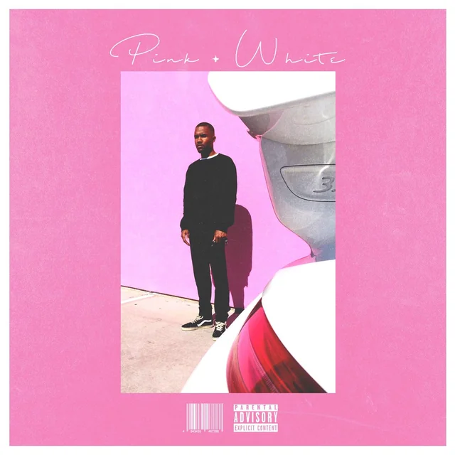

(っ◔◡◔)っ ♥ FRANK OCEAN - PINK+WHITE ♥
Lyric

Yeah, yeah oh
Yeah, yeah yeah
That's the way everyday goes
Every time we've no control
If the sky is pink and white
If the ground is black and yellow
It's the same way you showed me
Nod my head, don't close my eyes
Halfway on a slow move
It's the same way you showed me
If you could fly then you'd feel south
Up north's getting cold soon
The way it is, we're on land
So I'm someone to hold true
Keep you cool when it's still alive
Won't let you down when it's all ruin
Just the same way you showed me, showed me
You showed me love
Glory from above
Regard my dear
It's all downhill from here
In the wake of a hurricane
Dark skin of a summer shade
Nosedive in the flood lines
Tall tower of milk crates
It's the same way you showed me
Cannonball off the porch side
Older kids trying off the roof
Just the same way you showed me (You showed)
If you could die and come back to life
Up for air from the swimming pool
You'd kneel down to the dry land
Kiss the Earth that birthed you
Gave you tools just to stay alive
And make it out when the sun is ruined
That's the same way you showed me, showed me
You showed me love
Glory from above
Regard my dear
It's all downhill from here
Remember life
Remember how it was
Climb trees, Michael Jackson, it all ends here
Say what up to Matthew, to Shoob
Say what up to Danny
Say what up to life immortality
Bending up my Nikes
Running out the melpomene, nicotine
Stealing granny cigs (Take it easy)
Gimme something sweet
Bitch, I might like immortality
This is life, life immortality